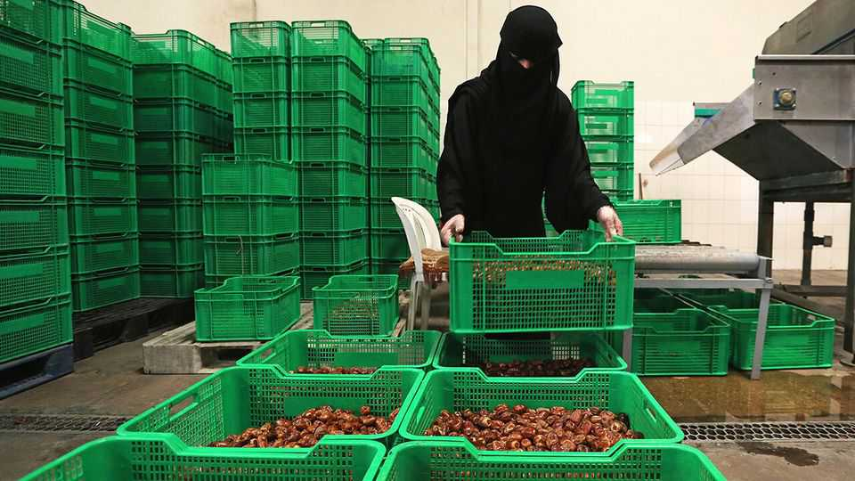
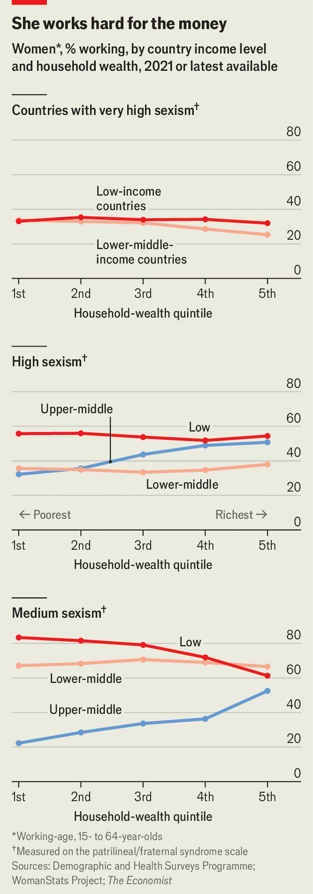
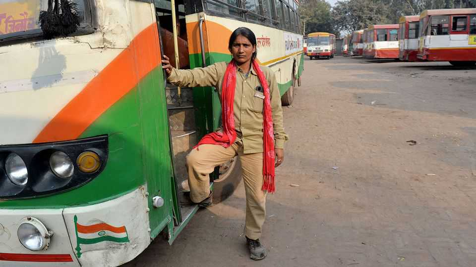

How work makes families more equal
The love of money is the root of quite a lot of good

Sep 3rd 2026
A decade ago Saudi women were barred from all but a few jobs. Then Saudi Arabia’s de facto ruler, Crown Prince Muhammad bin Salman, ended most restrictions—and even allowed Saudi women to drive. His aim was for the kingdom to rely less on oil and more on toil. Letting a previously housebound half of the population work was an obvious place to start.
This had dramatic consequences. Hamda, a young woman in Riyadh, heard the news with joy and told her husband she wanted to get a job. He forbade it. If she worked outside the home, she might talk to a man and bring shame on the family.
She argued with him for a year. Eventually, she won, for two reasons. First, extra money comes in handy. “I told him, we need to pay our bills,” she recalls. Second, her husband’s sisters all got jobs. Suddenly it became harder for him to claim, at the family dinner table, that only immoral women worked. So Hamda found a job in a mall, where she sells pyjamas. Her life is much better, she says. One day, she wants to buy a car and start her own business.
In much of the world, the big battle for women is not the one for equal pay, but the one to be allowed to work outside the home at all. In swathes of the Middle East, north Africa and South Asia, “male honour depends to a large degree on female seclusion,” notes Alice Evans of Stanford University. Fathers, brothers and husbands insist that for a woman to venture outside the home upends the natural order and puts her chastity at risk.
Such norms keep whole regions needlessly poor. In South Asia only a third of women are in the labour force; in the Middle East and north Africa, it is only a fifth. (In North America, by contrast, seven out of ten women work.) Removing the barriers to women working would raise per-person income by a fifth in many countries, estimates the World Bank—a bigger economic benefit than avoiding a civil war.
And there is more. As Hamda’s story illustrates, when women who were previously forced to stay at home start earning, the balance of power in the household shifts. Work makes families more equal.
The Economist crunched some numbers to explore the relationship between sexist norms and female labour. We used a measure called the “patrilineal/fraternal syndrome”, developed by Valerie Hudson of Texas A&M and Donna Lee Bowen and Perpetua Lynne Nielsen of Brigham Young University. It captures extreme chauvinism: things like the unequal treatment of women in family law and property rights, early marriage for girls, polygamy, son preference and tolerance of violence against women. We combined this measure with data from Demographic and Health Surveys (DHS), which poll women in low- and middle-income countries.

We found a strong relationship (see chart). In the 21 most sexist countries, only 30% of women work, and the rate stays low regardless of how poor the household or the country is. As sexism recedes, more women work, especially in poor places, where the income is most needed. In the poorest households in poor countries with a middling score for sexism, the share rises to 55%, and to 80% in the least sexist ones.
Next, we looked at whether earning a wage affected women’s status at home. We used the Survey-based Women’s emPowERment index (SWPER), devised by Fernanda Ewerling and Aluisio Barros of the Federal University of Pelotas in Brazil, and others. This uses DHS data to assess how much decision-making power women have. Can they decide how the family’s budget is spent? Can they go out to visit friends or relatives without asking permission? In short, do their voices count?
These results were striking, too (see chart). Even after controlling for how sexist a country is and how rich a household is, women with jobs consistently reported having more say at home.
There are various possible reasons for this. In societies where women are expected to be submissive, going out to work may teach them how to be more assertive—as Hamda’s growing confidence illustrates. Also, when women earn a big chunk of the household income, it is easier for them to have a say in how it is spent. Finally, when women can be financially independent, they can leave an unsatisfactory relationship, or credibly threaten to do so. So husbands must treat them better or risk ending up single. “Money is power,” says Sakine Madon, a Kurdish-Swedish writer. “As soon as women get more independent, they can divorce from bad marriages.”
In some places the obstacles to women working are formal and legal. According to the World Bank’s index on “Women, Business and the Law”, some 540m women live in countries where legal equality remains “distant”. Penny Goldberg of Yale University finds that a country’s score on this index is, unsurprisingly, “highly correlated” with how well women do in the workplace.
Thus, changing laws can help, as Saudi Arabia shows. But it is only a start. Social norms are often a deeper challenge, notes Kathleen Beegle of the World Bank. Things “like which household member is responsible for pounding the foo-foo in the morning and making sure that dinner is on the table at 5.30pm; it’s not something that is really in the traditional policy sphere for governments.”
In a conservative neighbourhood or village, the first women to reject old norms may face intense pressure to shut up and conform. Consider Sandhya, a community worker in Uttar Pradesh in northern India. She grew up in a rural Hindu village where “men never go in the kitchen.” She was married at 15, to a man who forbade her to go anywhere without a male relative. He beat her when she talked back.
After six years, she left him and went back to live with her parents. Wanting to support herself and her son, she started working, initially as a nurse. Poisonous gossip spread. Why was she coming home late, wearing nice clothes? Was she a prostitute? The slander did not kill her ambition. But it will make other local women think twice before seeking independence.

In rural India, as in many places, gossip helps preserve the status quo. Men routinely find higher wages by migrating to a city, but any woman who tries to do the same may be tarred as a sex worker, making it hard for her to marry. So nearly all rural-urban migrant workers in India are male. That makes the places where migrants lodge scary for women, and gives men cause to object to a daughter leaving the village—barring her way for her protection, they say. If this means she is around to cook and clean, they see that as a bonus.
In countries with deep-seated sexist norms, the technocratic toolkit for getting women into jobs is less effective. Subsidised child care may do wonders for Nordic women. But in Egypt, when an experiment offered mothers vouchers covering some or all of the cost of a creche for their children, only 11% took up the offer. Chauvinist hubbies outweigh cheap nurseries.
Yet norms change. Money, technology, social contagion and moving all can help, finds a World Bank study by Daniel Halim, Michael O’Sullivan and Abhilasha Sahay.
First, money. When a woman goes out to work, male relatives may feel that their honour has been sullied. However, even reactionary men like extra moolah. Dr Evans calls this the “honour/income trade-off”.
Different societies have dealt with it differently. China has eagerly chosen income. (The communist revolution set out to smash patriarchal traditions by pushing women into the workplace; then capitalist reforms raised the rewards for families whose daughters went to work in factories.) This is perhaps why, although China’s working-age female population is only marginally larger than India’s, its female labour force is nearly three times larger.
Cash persuades. When a woman earns a decent wage, her menfolk may have to reconsider their belief that women are not capable of such things. “My own brother didn’t believe in me in the past,” says Wafa al-Otiby, a beauty-salon owner in Riyadh. She asked him for a loan to start a home makeup studio. He lent her some cash, but laughed at her, telling her she did not know what she was doing and adding that in any case it was shameful. But when she paid him back within six months, he asked if he could be a partner in her thriving business. “Men’s attitudes toward women have changed,” says Ms Otiby. “They’re surprised now at what women can do.”
Wages motivate women, too, especially if they keep control of them. A study by Erica Field of Duke University and others found that Indian women on a public-works scheme worked more if their pay was deposited into accounts of their own, instead of those of their husbands’, and if they were trained in how to use them.
Dough changes attitudes among the better-off, too. Parnita Agarwal, the daughter of a small-factory owner in Uttar Pradesh, recalls growing up aware of families where husbands were bullies and wives were expected to be home by 7 or 8pm. She vowed to earn her own money, so that “if I’m ever stuck in an abusive marriage, [I can] afford my own housing and not think twice before leaving.”
When she won a place at Manchester University in Britain, some of her relatives told her parents not to let her go. The money would be better spent on a dowry, they said, since a girl’s aim should be to get married. Besides, studying abroad would make her impossible to control, they warned.
She went anyway. And when she came back to India, brimming with ideas about how to boost the family business and enrich her parents, her previously antagonistic relatives realised that they had been wrong. Now they are sending their daughters off to study, too, says Ms Agarwal.

Connectivity accelerates change. In a very sexist society, digital technology enables women “to envision a different life”, writes Roya Mahboob, an Afghan tech guru. Often the most persuasive examples come not from the most liberal countries, which may be far off and alien, but from slightly less conservative neighbours. Nawal al-Onazi, an HR manager in Saudi Arabia, says she was inspired by satellite television from other Arab countries when she was young. She saw interviews with women with important jobs, and Egyptian comedies that showed less rigid forms of family life. She ended up divorcing a husband who wouldn’t let her work.
Technology can sway families. A study in Uttar Pradesh by Madeline McKelway of Dartmouth College finds that showing husbands and in-laws a six-minute video of women talking about their experience on a job-training programme made it 35-57% more likely that their wives would get jobs. The video stressed that the workplace (a weaving factory) was safe and all-female and the women working there still found time for household chores.
Technology can also help women pursue specific job opportunities. When vacancies are listed online, women can browse and apply without leaving home. Some can work remotely, too. A study by Jing Lu of Zhejiang University found that by making job-searching easier and creating new female-friendly occupations such as online customer service, the spread of digital technology increased the likelihood of women in China having jobs.
Then there is contagion. People are social creatures. Rather than resolving moral questions from first principles, most take cues from their peers. A study in 2020 by Leonardo Bursztyn of the University of Chicago found that most young married Saudi men thought women should be allowed to work outside the home. However, three-quarters underestimated how many other Saudi men agreed with them. When told the true number, they were more likely to help their wives find jobs.
Ms Otiby, the beauty-salon owner in Riyadh, says that even traditional Saudi men have now “started seeing women among their colleagues…and it has changed people’s thinking about marriage, too. It’s amazing! People now are getting married after meeting one another through work, instead of the traditional way.”
The kind of work that women do matters, suggests Johanna Mollerstrom of George Mason University. If most of the jobs available to married women are unsafe and unclean, a working wife is a signal to others (say, in the neighbourhood or church) that her able-bodied husband is lazy. As a country becomes richer and those jobs become nicer, the stigma fades.
Dr Evans puts it differently. The “honour/income trade-off” can change if the opportunity cost of women not working rises (because job opportunities improve) or the perceived cost (in “dishonour”) of women working falls. Saudi Arabia’s leader has been pulling both these levers, with quotas for firms hiring Saudi nationals and loud signals that “it’s respectable for women to be in the public sphere”, such as royal women doing fashion shows.
Perhaps the most dramatic way to escape from patriarchal norms is to move somewhere where they no longer apply. When Sara Mohammad was 17, her brother held a Kalashnikov to her head, demanding that she agree to an “exchange marriage”. He wanted her to wed a man twice her age whom she had never met, and in exchange her brother would be allowed to marry the man’s sister. Ms Mohammad, who was then living in Iraq, said no, twice. Her brother threatened that if she said “no” a third time, he would kill her, “as easily as drinking a glass of water”. So she said yes.
Then, as the wedding was being prepared, she slipped away under a borrowed burqa, took refuge with a sympathetic cousin and eventually found asylum in Sweden. Now she runs GAPF, a charity that campaigns against honour-based violence—and has a partner whose permission she does not need to ask to do things.
The process by which migrants abandon old customs is not straightforward, however. Women rarely migrate on their own. Usually they arrive with male relatives, who may be keen to isolate them from the host society. And the arrival of people from honour cultures in liberal countries is often unpopular. Many Swedes, for example, think the surge of asylum-seekers from Muslim countries a decade ago will undermine local feminist norms. This is a potent rallying cry for the populist right in Europe and America.
Yet such fears are overblown. Natives seldom adopt the attitudes of recent arrivals, whereas immigrants tend to assimilate. In America immigrants from countries where few women work have nearly closed the employment gap with native women by the second generation. A study of immigrants to 18 European countries from 46 other places found that female second-generation migrants hold more egalitarian views than male ones, and that the more unequal their country of ancestry, the larger the relative shift among women.
Liberal cultures are attractive, especially for women. Kinem (not her real name), who moved from Turkey to Sweden as a girl, decided that she did not want the “copy and paste” lifestyle of her female cousins, who “didn’t study”, married “quite young” and “all had the same apartments with the same furniture”.
Her rebellion came in stages. Her parents were not the strictest; they let her go to university. But they wanted her to come home every weekend. She stopped visiting so often, and started going to parties, though she did not drink alcohol. With a degree in chemical engineering, she found a series of good jobs in medical technology and bought her own apartment in Stockholm. That bothered her parents, but she held firm. Finally, she married a Swede. That was too much for her parents, who cut off ties with her for five years.
Eventually they were reconciled. They now accept that she will make her own choices. Today, she says, roughly half of her female cousins have jobs. “They have realised that they can also bring in money to the family. And people like money.” ■